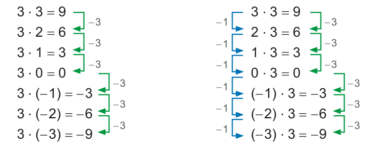
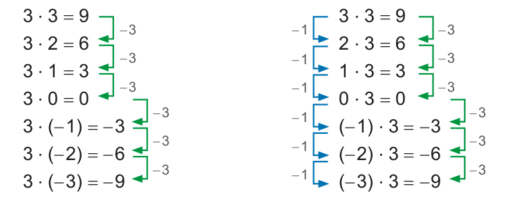
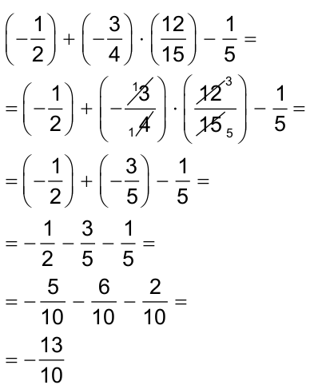
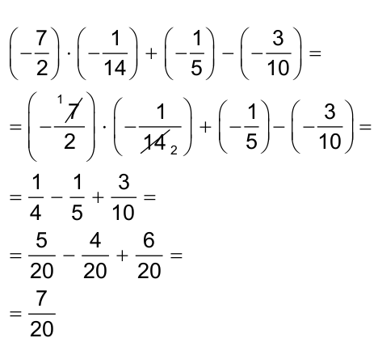
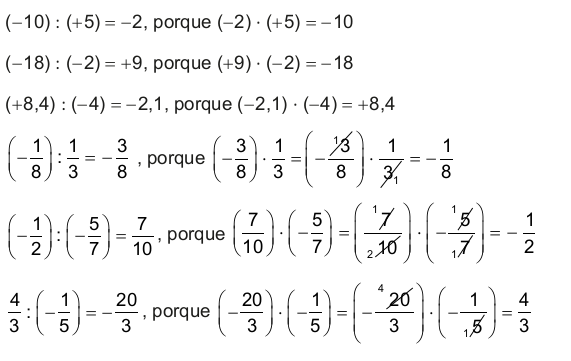

CAPÍTULO 2 - Multiplicação e divisão envolvendo números positivos e negativos
Multiplicação envolvendo números positivos e negativos
Como realizamos a multiplicação entre dois números naturais? Podemos relacionar esta operação a uma das ideias associadas a ela, a de adicionar parcelas iguais. Veja:
4 ∙ 6 = 6 + 6 + 6 + 6 = 24
Utilizando essa ideia, vamos resolver a seguinte multiplicação:
3 ∙ (- 2) = (- 2) + (- 2) + (- 2) = - 2 - 2 - 2 = - 6 ou seja 3 ∙ (- 2) = - 6
Lembra quando aprendeu a tabuada? Note que nela há uma regularidade, em que os acréscimos são sempre os mesmos, ou seja, há um padrão entre os resultados obtidos. Veja um exemplo:

Agora, observe as regularidades que ocorrem nas multiplicações abaixo:
 

e assim por diante.
55
UNIDADE 2 - CAPÍTULO 2
Agora vamos verificar a regularidade nas multiplicações abaixo:
Nas multiplicações que realizamos anteriormente, utilizamos números inteiros, porém podemos realizar multiplicações com quaisquer outros números que:
► o produto entre dois números positivos será sempre um número positivo;
► o produto entre dois números negativos será sempre um número positivo;
► o produto entre dois números, sendo um positivo e o outro negativo será sempre um número negativo.
Veja alguns exemplos:
a) (−3) ∙ (1,2) = −3,6
b) (−0,5) ∙ (−2,2) = +1,1
c) \(\left(-\dfrac{2}{3}\right) \cdot \left(-\dfrac{4}{5}\right) = + \dfrac{8}{15}\)
d) \(\left(-\dfrac{7}{2}\right) \cdot \left(+\dfrac{1}{8}\right) = - \dfrac{7}{16}\)

1. Troque ideias com um colega e de acordo com o que foi estudado construam, no caderno, um quadro para resumir as conclusões a que vocês chegaram sobre os sinais dos fatores e o sinal do produto de uma multiplicação. Observem o modelo a seguir:
56
UNIDADE 2 - CAPÍTULO 2
Multiplicações com dois ou mais fatores
Observe a multiplicação a seguir:
(1,5) ∙ (− 2) ∙ (0,3)
Vamos resolvê-la de duas maneiras diferentes:
Em um produto com três fatores, podemos associar os fatores multiplicando qualquer um deles pelo produto dos outros dois.
Vejamos outro exemplo:
\(\left(-\dfrac{1}{2}\right) \cdot \left(+\dfrac{1}{4}\right) \cdot \left(\dfrac{1}{5}\right) \cdot \left(-\dfrac{7}{3}\right)\)
Vamos apresentar duas maneiras de associar os fatores, porém não são as únicas formas. Podemos fazer outras associações:
Expressões numéricas
Manuela foi ao supermercado e comprou 2 caixas de leite que custam R$ 2,14 cada uma, 3 latas de milho por R$ 2,13 cada e 2 latas de ervilha que custam R$ 1,98 cada. No caixa, ela entregou para pagar a compra uma nota de R$ 50,00. Quanto ela recebeu de troco?
Vamos representar a situação por meio de duas expres- sões numéricas:

1.ª expressão: 50 − 2 ∙ 2,14 − 3 ∙ 2,13 − 2 ∙ 1,98
Vamos resolvê-la:
50 − 2 ∙ 2,14 − 3 ∙ 2,13 − 2 ∙ 1,98 =
= 50 − 4,28 − 6,39 − 3,96 =
= 45,72 − 6,39 − 3,96 =
= 39,33 − 3,96 =
= 35,37
57
UNIDADE 2 - CAPÍTULO 2
2.ª expressão: 50 − (2 ∙ 2,14 + 3 ∙ 2,14 + 2 ∙ 1,98)
Vamos resolvê-la:
50 − (2 ∙ 2,14 + 3 ∙ 2,14 + 2 ∙ 1,98) =
= 50 − (4,28 + 6,39 + 3,96) =
= 50 − (+14,63) =
= 50 − 14,63 =
= 35,37
Manuela recebeu de troco R$ 35,37.
Para resolver expressões numéricas que envolvam multiplicação, adição e subtração, primeiramente resolve-se a multiplicação e, em seguida, a adição e subtração, respeitando a ordem em que aparecem.
Quando houver parênteses, colchetes e chaves, deve-se respeitar esta ordem, respectivamente, para resolver uma expressão numérica.
Veja alguns exemplos:
a) (− 2) ∙ (− 4) + (− 5) − (+ 3) =
=8−5−3=
=3−3=
=0
b) (− 1,2) + (− 0,3) ∙ (+ 2,4) − (+ 5,6) =
= (− 1,2) + (− 0,72) - (+ 5,6) =
= − 1,92 − 5,6 =
= − 7,52
 58
UNIDADE 2 - CAPÍTULO 2
ENCONTRE SOLUÇÕES
1. Calcule mentalmente e escreva o resultado em seu caderno.

a) (+ 8) ∙ (− 5)
b) (− 10) ∙ (+ 9)
c) (− 12) ∙ (− 3)
d) (+ 20) ∙ (− 10)
e) (- 7) ∙ (- 11)
f) (+ 4) ∙ (+ 15)
g) (- 6) ∙ (+ 7)
h) (- 14) ∙ (- 2)
2. Resolva em seu caderno:
a) (− 7) ∙ (− 8) ∙ (+ 2)
b) (+ 13) ∙ (− 5) ∙ (+ 10)
c) (− 11) ∙ (+ 1) ∙ (− 4)
d) (− 9) ∙ (− 3) ∙ (− 2)
3. Marcelo multiplicou dois números inteiros e encontrou como resultado − 18. Quais são as possibilidades de multiplicação para que ele encontre esse valor?
4. Escreva em seu caderno:
a) o dobro de − 15;
b) o triplo de + 20;
c) o quíntuplo de − 11;
d) o quadruplo de + 9.
5. Calcule e anote o resultado em seu ca- derno:
a) |−10| ⋅ |+3|
b) |−11| ⋅ ( −2)
c) |−9| ⋅ |−8|
d) ( −4) ⋅ |+5|
6. Calcule o valor das expressões numéricas abaixo:
a) − 13 − (− 2 + 10) ∙ (− 5)
b) − (15 − 30) ∙ (− 3)
c) (− 6 − 7) ∙ (12 + 5 − 1)
d) (− 10) ∙ (− 4) + (− 2) ∙ (+ 11) − 21
7. Resolva em seu caderno, simplificando o resultado quando possível.
a) \(\left(-\dfrac{3}{5}\right) \cdot \left(-\dfrac{10}{11}\right)\)
b) \(\left(+\dfrac{12}{7}\right) \cdot \left(-\dfrac{49}{3}\right)\)
c) \( 0,25 \cdot \left(-\dfrac{49}{3}\right)\)
d) −1,2 ∙ (+0,3)
e) +7,1 ∙ (+3,4)
f) −2,4 ∙ (−0,4)
g) \(\left(-\dfrac{1}{6}\right) \cdot \left(+\dfrac{10}{3}\right)\)
g) \(\left(-\dfrac{2}{5}\right) \cdot \left(\dfrac{15}{7}\right) \cdot \left(-\dfrac{14}{9}\right)\)
8. Simplifique as expressões numéricas.
a) \(\left(-\dfrac{1}{2}\right) \cdot \left(\dfrac{10}{3}\right)- \left(-\dfrac{2}{9}\right)\)
b) −5 − (0,1) + (−2,3) ∙ (0,5)
c) \(-7 + \left(\dfrac{1}{2} - \dfrac{1}{3} \right) \cdot \left(-\dfrac{2}{5}\right)\)
d) \(\left(-\dfrac{3}{14}\right) \cdot \left(\dfrac{6}{7}\right) + \left(-\dfrac{14}{3}\right) \cdot \left(-\dfrac{2}{7}\right)\)
e) \(\left(-\dfrac{5}{12}\right) \cdot \left(-\dfrac{6}{25}\right) - \left(-\dfrac{1}{5}\right) \cdot \left(\dfrac{2}{10}\right)\)
9. Em seu caderno, elabore um problema envolvendo multiplicação de números racionais. Em seguida, peça a um colega que resolva o problema elaborado por você. Juntos, verifiquem se a resolução apresentada está correta.
59
UNIDADE 2 - CAPÍTULO 2
10. (OBMEP) O número n é um inteiro negativo. Qual dos números abaixo é o maior?
a) − 3 ∙ n
b) 3 ∙ n
c) n − 3
d) 9 ∙ n − 3
e) n − 9
Divisão envolvendo números positivos e negativos
Vânia precisa fazer laços de presente. Ela tem uma fita vermelha com 15,5 metros de comprimento e pretende dividi-la em 31 partes iguais. Qual será o comprimento de cada pedaço de fita?
Podemos representar esta situação por meio da operação de divisão:
15,5 : 31 = 0,5, pois 0,5 ∙ 31 = 15,5
Dessa maneira, cada pedaço de fita terá 0,5 metro de comprimento.

Veja outra situação:
Vanessa e Rosa são sócias em uma empresa. No mês passado, a em- presa teve um prejuízo de 500 reais que será dividido igualmente pelas duas sócias. Qual será o valor que cada uma delas terá de prejuízo?
Podemos representar essa situação por meio de uma divisão em que o dividendo é um número negativo.
(− 500) : 2 = −250, pois (− 250) ∙ 2 = − 500
Assim, cada sócia terá um prejuízo de 250 reais.
60
UNIDADE 2 - CAPÍTULO 2
Você percebeu que a divisão é a operação inversa da multiplicação?
Observe:

Então, vamos utilizar este raciocínio para realizar a divisão envolvendo números positivos e negativos. Observe:
1. Troque ideias com um colega e, de acordo com o que foi estudado, construam no caderno um quadro para resumir as conclusões a que vocês chegaram sobre os sinais dos quocientes de uma divisão. Vejam o modelo abaixo:

61
UNIDADE 2 - CAPÍTULO 2
Expressões numéricas
Michele foi a um restaurante com 3 amigas. Elas pediram 4 sucos no valor de R$ 5,50 cada e um único prato no valor de R$ 98,00 para as quatro. Nesse restaurante, não é cobrado a taxa de 10% do valor total gasto. Ao pedirem a conta, decidiram dividi-la igualmente entre todas. Qual o valor que cada uma pagou?
Para resolver esta situação vamos representá-la por meio de uma expressão numérica: (4 ∙ 5,50 + 98) : 4.
Resolvendo-a, temos:
(4 ∙ 5,50 + 98) : 4 =
= (22 + 98) : 4 =
= 120 : 4 =
= 30
Cada amiga pagou R$ 30,00.

Em expressões numéricas envolvendo divisão, multiplicação, adição e subtração, devemos resolver na seguinte ordem:
► a divisão ou multiplicação na sequência em que aparecem;
► a adição e subtração, respeitando também a sequência em que aparecem.
Quando houver parênteses, deve-se resolvê-lo antes, em seguida, col- chetes e chaves.
Vejamos alguns exemplos:
a) (− 36) : 6 + (− 10) − (− 18) + (− 7) ∙ (+ 2) =
= (− 6) + (− 10) − (− 18) + (− 14) =
= − 6 − 10 + 18 − 14 =
= − 16 + 18 − 14 =
= 2 − 14 =
= − 12
62
UNIDADE 2 - CAPÍTULO 2
b) \(\left(-\dfrac{1}{4}\right) + \left(-\dfrac{2}{3}\right) \colon \left(-\dfrac{1}{5}\right) - \left(\dfrac{1}{6}\right)=\)
\(= \left(-\dfrac{1}{4}\right) + \left(-\dfrac{2}{3}\right) \cdot (-5) - \dfrac{1}{2}\ =\)
\( = \dfrac{1}{4}+\dfrac{10}{3}-\dfrac{1}{2}=\)
\( = \dfrac{37}{12}-\dfrac{6}{12}=\)
\( = \dfrac{31}{12}\)
c) \(\left(-\dfrac{11}{5}\right) \colon \left(\dfrac{1}{2}\right) - \left(-\dfrac{1}{5}\right) \cdot \left(-\dfrac{3}{4}\right)=\)
\(\left(-\dfrac{11}{5}\right) \cdot \left(\dfrac{2}{1}\right) - \left(\dfrac{3}{20}\right)=\)
\(\left(-\dfrac{22}{5}\right) - \dfrac{3}{20} =\)
\(-\dfrac{88}{20} -\dfrac{3}{20} =\)
\(-\dfrac{91}{20}\)
ENCONTRE SOLUÇÕES
1. Calcule mentalmente e anote o resultado em seu caderno.
a) (− 12) : (− 6)
b) (+ 121) : (− 11)
c) (+ 56) : (+ 7)
d) (− 72) : (− 8)
e) (− 44) : (+ 2)
f) (+ 63) : (− 9)
g) (− 28) : (− 7)
h) (+ 32) : (− 4)
2. Escreva em seu caderno:
a) a quarta parte de − 2;
b) a terça parte de − 1;
c) a quinta parte de − 30.
3. Verifique nas expressões a seguir, se o resultado é positivo ou negativo.
a) (+ b) ∙ (− a) : (− b)
b) (− b) : (− b) ∙ (+ a)
c) (+ a) ∙ (+ b) : (− c)
d) (− a) : (− b) ∙ (− c)
4. Nas igualdades a seguir, qual deve ser o valor do símbolo ► para que as sentenças sejam verdadeiras? Calcule e anote a resposta em seu caderno.
a) ► : (− 2) = − 16
b) (− 45) : ► = 5
c) ► : (+ 10) = − 4
d) (+ 144) : ► = 12
e) (- 0,25) : ► = 0,5
f) ► : (- 0,7) = - 0,7
5. Calcule:
a) |−34| : |−17|
b) |−56| : |+2|
c) ( −63 ) : |−7|
d) |+88| : ( −10)
e) |1,69| : ( −1,3)
f) ( −1,21) : |−10|
63
UNIDADE 2 - CAPÍTULO 2
6. Resolva as divisões em seu caderno:
a) \(\left(-\dfrac{3}{4}\right) \colon \left(\dfrac{1}{3}\right)\)
b) \(\left(-\dfrac{8}{5}\right) \colon \left(-\dfrac{3}{2}\right)\)
c) \(\left(+\dfrac{6}{7}\right) \colon (-3)\)
d) \( (+18) \colon \left(-\dfrac{1}{2}\right)\)
e) \( -\dfrac{2}{3} \colon \dfrac{1}{4}\)
f) − 0,8 : 1,6
g) 36,8 : (− 2)
h) \( \dfrac{-\dfrac{3}{8}}{+\dfrac{2}{4}}\)
i) \( \dfrac{-\dfrac{2}{5}}{+\dfrac{1}{7}}\)
d) \( \left(-\dfrac{11}{9}\right) \colon \left(-\dfrac{3}{5}\right)\)
7. Determine:
a) a metade de \(-\dfrac{8}{5}\) ;
b) a terça parte de \(\dfrac{1}{8}\) ;
c) a quarta parte de \(-\dfrac{2}{7}\) ;
d) a metade de - 56,88;
e) a terça parte de 37,5;
f) a quarta parte de - 126,4.
8. Resolva, em seu caderno, as expressões numéricas abaixo.
a) (− 12) : (− 6) + 1,2 − 8,9
b) (− 0,5) ∙ 6 − 0,7 + (− 1,6) : (− 0,2)
c) \( \left(-\dfrac{2}{3}\right) \colon \left(\dfrac{1}{5}\right) + \left(\dfrac{4}{5}\right) \cdot \left(-\dfrac{10}{3}\right) \)
d) \( \left(-\dfrac{3}{4}\right) \colon \left(\dfrac{9}{16}\right) - \left(-\dfrac{2}{5}\right) \colon \left(-\dfrac{3}{20}\right) \)
e) \( \left(-3 + \dfrac{3}{4}\right) \colon \left(-\dfrac{7}{9}\right) +2 \)
f) \( \left(-2 + \dfrac{1}{2} - \dfrac{3}{4} \right) \colon \left(-5 + \dfrac{1}{2}\right) \)
g) (- 1,96) : (- 1,4) + (- 0,2) ∙ (1,3) - (- 0,8)
h) - 0,7 + (- 2,56) : (1,6) + (1,1) ∙ (- 1,5)
i) \( \left(-\dfrac{2}{5}\right) \colon \left(-\dfrac{3}{2}\right) -\left(\dfrac{4}{3}-\dfrac{1}{2}\right) \colon \left(-\dfrac{1}{3}\right) \)
9. Copie o quadro abaixo em seu caderno e complete-o:

10. Em seu caderno, elabore um problema envolvendo divisão de números racionais. Em seguida, peça a um colega que resolva o problema elaborado por você. Juntos, verifiquem se a resolução apresentada está correta.
64
UNIDADE 2 - CAPÍTULO 2